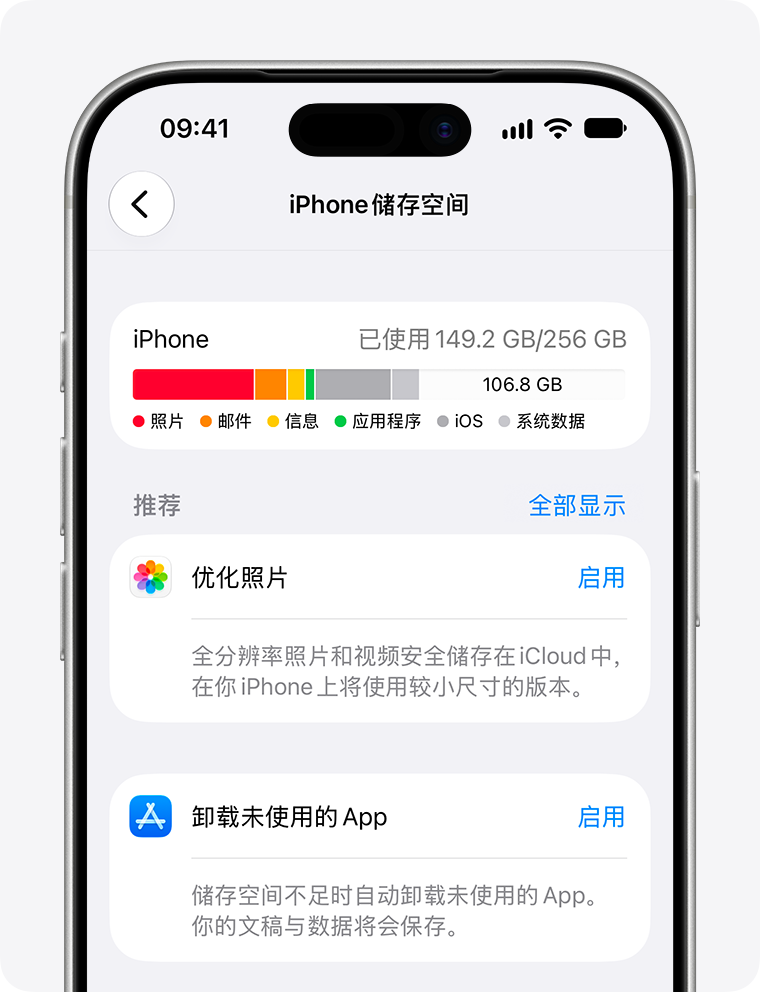
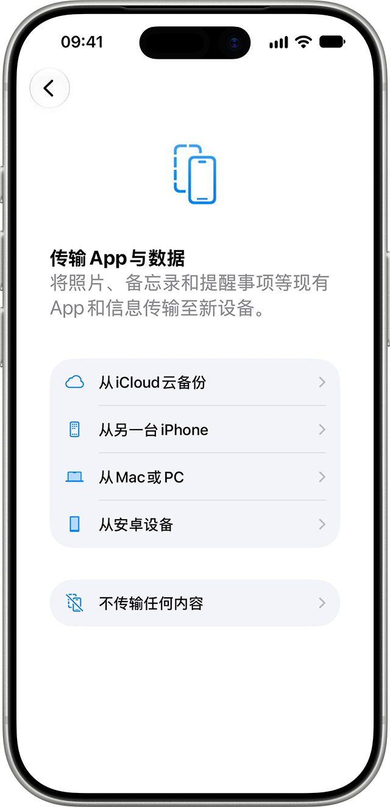
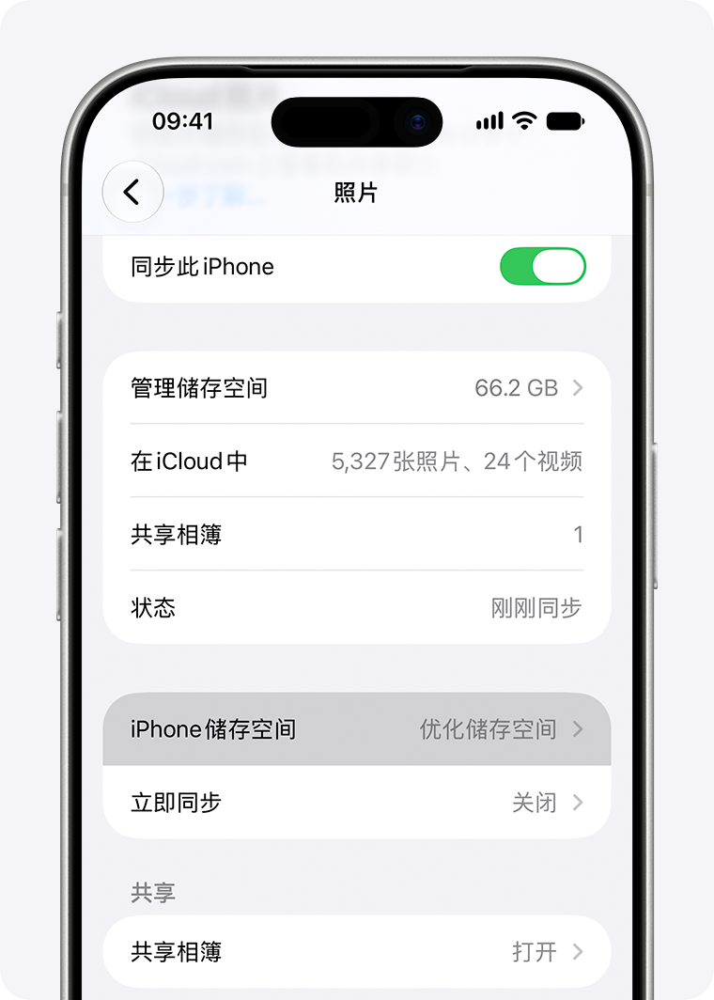
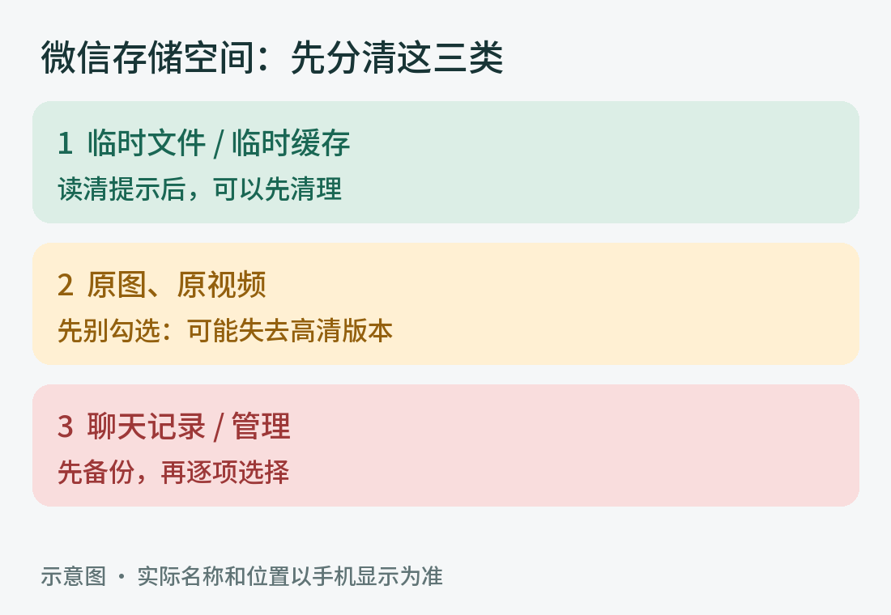
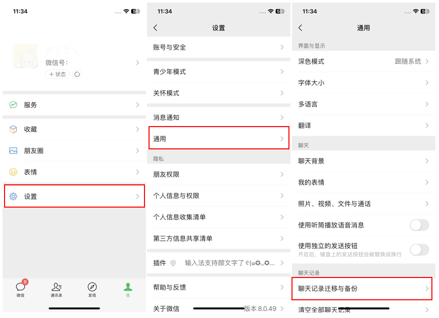

一步一步来 · 不用一次做完
换新 iPhone，
把空间留出来。
给家人的大字图解。保留原来的 Apple ID，按需要搬资料；旧手机先留好，重要照片和聊天先保住。
先看第 1 页，再照顺序操作PDF 可直接在微信打开，也可以转发或打印。网页图片点开可放大。手机和微信版本不同，按钮文字可能略有差别；没有核实您手机的具体型号、容量及同步状态。
01 / 先读这一页
先决定：怎样换新手机
可以设为新手机，再登录原来的 Apple ID。
- 1想少带旧东西：新手机选“不传输 App 与数据”，再按需要安装微信等应用。不要新建 Apple ID。
- 2想尽量省事：先给旧手机清出空间，再用“快速开始”迁移，也是一种选择。先比较两台手机的容量。
- 3登录同一 Apple ID 后，已开启的 iCloud 照片、通讯录等仍会同步。设为新手机，并不代表以后不会占空间。
- 4微信的旧聊天不会因为登录 Apple ID 自动回来；要用微信自己的迁移或备份功能。
02 / 在旧手机上操作
第一步：看是谁占了空间
先看数字，暂时不删除。
- 1打开灰色齿轮“设置” → “通用” → “iPhone 储存空间”。等上面的彩条和下面的应用列表算完。
- 2记下“已用多少 / 总共多少”，再看排在前面的“照片”“微信”各有多大。把这一页截图发给家人判断。
- 3新手机也查看同一页，确认新手机总容量。旧手机接近满，不代表新手机一定放不下。
- 4再看“设置” → 最上方自己的名字 → “iCloud”。这里是云端空间，和手机容量是两件事。

03 / 清理和换机之前
第二步：先保住重要资料
备份完成，还要抽查能不能打开。
- 1照片：确认旧手机的“照片”是否已开启 iCloud 同步，并查看同步状态。若显示“已暂停”“空间不足”或还在上传，先别删。
- 2没有足够 iCloud 空间：让家人先把重要照片、视频存到电脑或硬盘，抽查能打开，再谈清理。不需要马上买云空间。
- 3微信：先在电脑微信做“迁移与备份” → “备份与恢复”，手机按提示选择记录并确认；电脑和手机接同一个 Wi-Fi。
- 4记住原 Apple ID 和微信账号，确认原手机号能收验证码。通讯录若只存在本机或其他邮箱，要另行迁移。
04 / 在新手机上操作
第三步：新手机这样设置
选“不传输”，再登录妈妈原来的账号。
- 1两台手机充好电，接上可靠的 Wi-Fi。新手机开机，按屏幕选语言、地区等。
- 2如果要按新手机设置，在快速开始页面选“不通过另一台设备设置”或“手动设置”（文字可能不同）。
- 3到“传输 App 与数据”时，选“不传输 App 与数据”或“不传输任何内容”。然后登录原来的 Apple ID。
- 4设置完成后，只装常用应用。打开“设置” → 名字 → “iCloud”，逐项检查通讯录、照片等同步是否符合需要。

05 / 想保留照片、又想省空间
第四步：照片多，先用优化
先确认云端放得下，而且照片已同步完整。
- 1打开“设置” → 最上方自己的名字 → “iCloud” → “照片”。确认账号是妈妈自己的。
- 2若决定使用 iCloud 照片，打开“同步此 iPhone”，选择“优化 iPhone 储存空间”或“优化储存空间”。部分版本要先点“iPhone 储存空间”。
- 3接电、连 Wi-Fi，等待同步和优化。原片在 iCloud，手机保留较小版本；要看原片时可能需要联网下载。
- 4等同步完成，再查看手机储存空间。不会立刻全部变小，节省多少取决于图库和使用情况。

06 / 在旧手机微信里操作
第五步：微信先清临时缓存
先清临时文件，不要一上来点“全选”。
- 1打开微信 → 右下角“我” → “设置” → “通用” → “存储空间”，等待计算。新版本也可能直接在设置中显示“存储空间”。
- 2找到“缓存” → “前往清理”或“去清理”。先读清楚里面有哪些项目。
- 3先只选择明确写着“临时文件”或“临时缓存”的项目。若有“已接收/已发出的原图、原视频”，先不要勾选。
- 4确认清理的是临时项，再按页面提示完成。找不到单独临时项，或看不懂提示，就先停下让家人看。

参考：[8]
07 / 这一页请家人一起看
第六步：还不够，再挑大文件
只删已经确认不要、或已另存并核对好的东西。
- 1微信“存储空间” → “聊天记录”旁的“管理”。先按大小看群聊，再逐项看照片、视频或文件。
- 2先选不要的转发视频、大文件。家庭照片、重要语音、证件和需要的文件先保留；删除前读清楚确认提示。
- 3原图、原视频若选择清理，可能只剩普通画质。想保留高清版本，先另存并打开确认；不要指望以后一定能重新下载。
- 4相册里只处理确认不要的长视频、截图和废片。开启 iCloud 照片时，删除会同步到其他设备。不要急着清空“最近删除”。
08 / 两台手机都要在旁边
第七步：只迁移需要的聊天
用同一个微信号，先选家人和重要聊天。
- 1两台手机接同一个 Wi-Fi，接上电。先在旧手机微信打开“我” → “设置” → “通用/聊天” → “聊天记录迁移与备份”。
- 2选“迁移” → “迁移到另一台手机或平板”，选择“部分聊天记录”，勾选家人、重要联系人和需要的群。
- 3旧手机显示迁移二维码后，在新手机登录同一个微信号，用新手机微信扫描这个二维码。按提示保持网络和微信运行。
- 4完成后，在新手机点开重要聊天，抽查旧文字、照片、语音和视频能否打开。迁移进去的记录仍会占新手机空间。

09 / 换机后的核对表
最后：逐项确认，再放心用
先确认资料都在，旧手机暂时保留。
- 1新手机：能打电话、收短信；原 Apple ID 正常；微信能发消息。
- 2通讯录：几个常用号码都在。照片：最近和很早的照片、长视频都能打开；只在旧手机里的内容已另存。
- 3微信：需要的老聊天、语音、照片和文件都能打开；电脑备份保存好。支付、银行等应用由本人按官方提示重新验证。
- 4过一两天，再看“iPhone 储存空间”。以后先清不需要的下载和临时缓存；不要养成每次都全选删除的习惯。
资料来源与图示说明
需要核对时，看官方说明
核对日期：2026 年 11 月 1 日。苹果截图和微信迁移截图来自官方帮助页面，仅作界面参考；微信清理图是操作示意，不是您的手机截屏。微信清理选项请以当前版本页面说明为准，有疑问先到“帮助与反馈”核实。